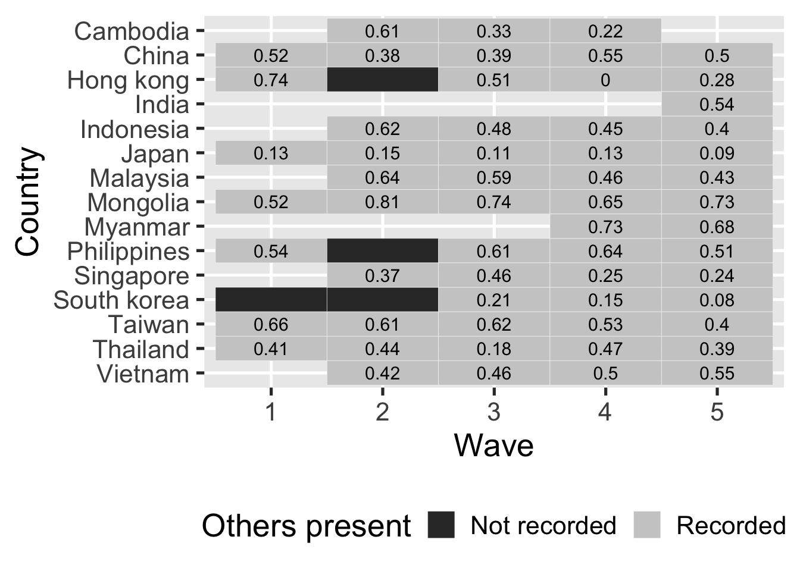
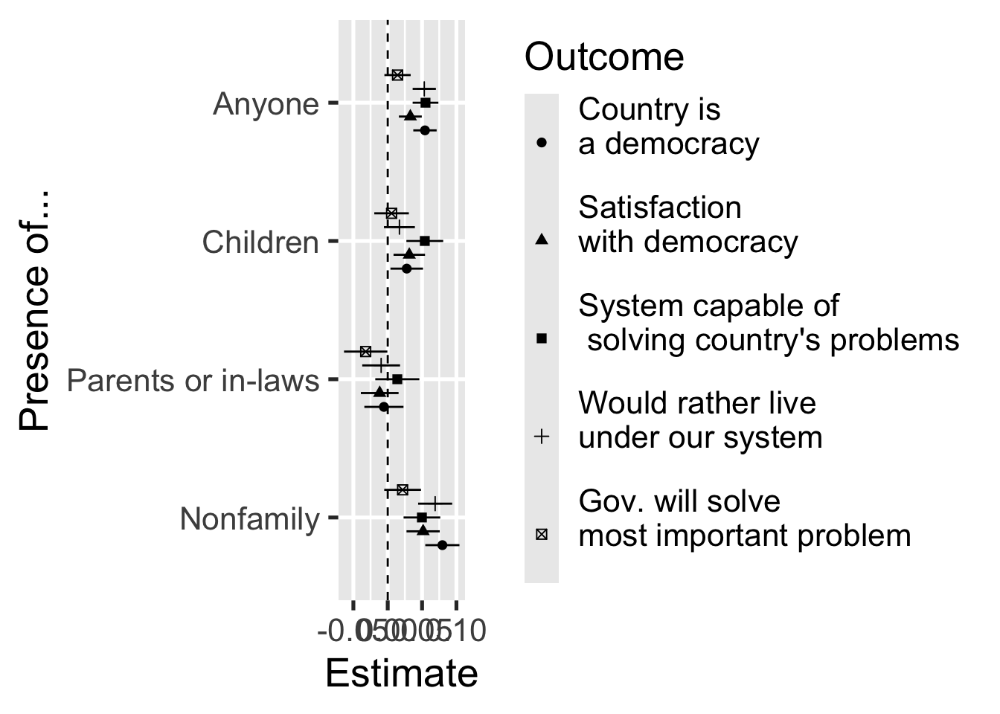
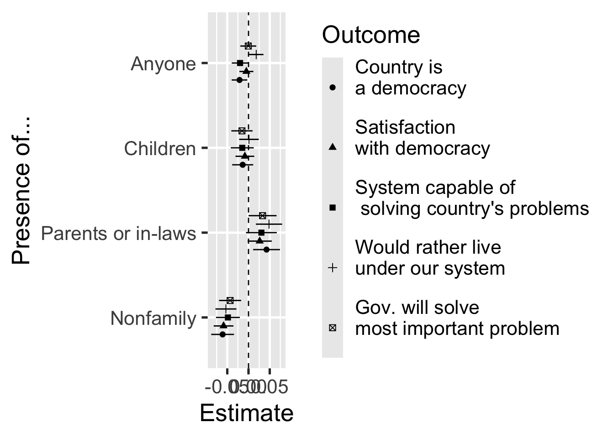

How the Presence of Others
Can Bias Survey Responses
Gustavo Diaz
McMaster University
diazg2@mcmaster.ca
Michelle Dion
McMaster University dionm@mcmaster.ca
Guillem Riambau
Universitat de Barcelona Institut d’Economia de Barcelona
griambau@ub.edu
Slides and paper: talks.gustavodiaz.org
Disclaimer
Data harmonization still in progress!
Sensitive survey questions
A social referent…
… who can learn the response
… has a preferred response
Cost of wrong response
See Tourangeau and Yan (2007) and Blair et al (2020) for extensive discussions
. . .
Presence of others meets all criteria
What we know so far
Presence of enumerators: Political questions are sensitive
Household surveys: Presence of parents/spouses shapes answers
Afrobarometer: Family and non-family affect responses and don’t know rates (Zimbalist 2022)
This project
More data and more details
Determine severity of problem
This project
More data and more details
Determine severity of problem
Asian Barometer Surveys
Waves 1-5 (2000-2021)
1,000-1,800 respondents per country-wave
15 countries, 21 years, 97,439 interviews
95% Detailed record of who was present
45% of interviews had others present
Partner/spouse > Children > Parents/in-laws > Nonfamily > Party/gov officials
Coverage
Sensitive questions
Country is a democracy
Satisfaction with democracy
System of government is capable of solving country’s problems
I would rather live under our system of government
Government will solve most important problem
Results: Refusal to answer

Controls for sex, education, age, urban, religiosity. Country and wave fixed effects. HC2 standard errors.
Results: Agreement to questions

Controls for sex, education, age, urban, religiosity. Country and wave fixed effects. HC2 standard errors.
Next steps
Questions about trust, perceptions of corruption
Determine whether presence of others biases statistical inferences
Takeaway: Take into account in research design and analysis
Learn more: talks.gustavodiaz.org